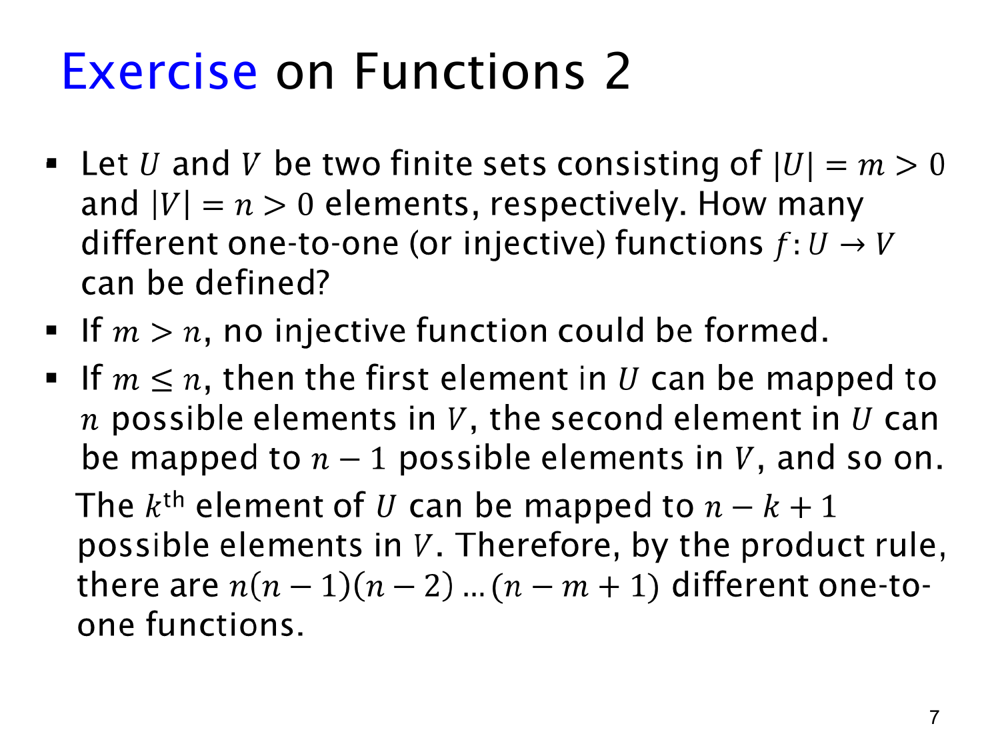

课件第 7 页讲解原文
查看这一页课件

单射计数：已经用过的输出不能再用
题目仍然是 f:U→V，其中 ∣U∣=m>0、∣V∣=n>0，但现在要求函数是 one-to-one / injective（单射）。
单射的条件是：不同输入必须有不同输出。写成符号就是：
u=v⟹f(u)=f(v).
先检查数量是否允许。如果 m>n，输入比可用输出还多，不可能为每个输入分配互不相同的输出，因此单射数量为 0。
如果 m≤n，固定输入的处理顺序，逐一分配输出。第一个输入有 n 个输出可选；第二个不能使用第一个占用的输出，剩下 n−1 个；第三个剩下 n−2 个。
一般地，在给第 k 个输入分配输出时，前面已用去 k−1 个不同输出，所以剩余数是：
n−(k−1)=n−k+1.
注意这里的 +1：第 k 步开始前只做完了 k−1 步。乘到第 m 个输入时，最后一个因子就是 n−m+1。因此：
#单射=n(n−1)⋯(n−m+1)=(n−m)!n!(m≤n).
例如，3 个输入映到 5 个可能输出，单射有 5×4×3=60 个；普通函数则有 53=125 个。差别来自是否允许输出重复。
当 m=n 时，结果是 n!。此时每个输出都恰好被使用一次，单射同时也是双射。这里可以直接用乘法法则，因为不论先前具体用了哪些输出，第 k 步剩下的数量总是相同的。